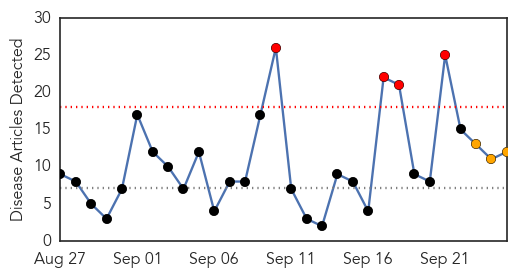
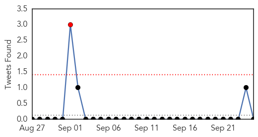
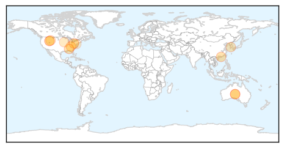
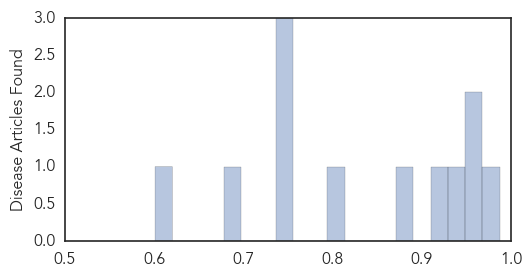

Toggle navigation
Early Warning
Daily Alerts
Influenza
Sep 25, 2015
Compare to:
-
Dengue Fever
Hemmorhagic Fever
Mold/Fungal Infection
Meningitis
Pertussis / Whooping Cough
Middle East Respiratory Syndrome
Cholera
Hepatitis
Chikungunya
Yellow Fever
Bubonic Plague
West Nile Virus
Swine Flu
Ebola
Measles
Unknown
Mumps
30 Day Trends
Web: 4
alerts
, 3
warnings
Twitter: 1
alerts
, 0
warnings
Top Articles:
0.987
The flu vaccine is available in the Lehigh Valley
0.967
Editorial: Free Flu Shot Saturday helps on two fronts
0.951
Flu vaccines to be distributed for free to high-risk groups
0.943
The US Could Be Heading For One Of Its Worst Flu Seasons In Years
0.924
Alabama mystery illness solved -
0.889
The US could be heading for one of its worst flu seasons in years
0.798
Gov't on high alert over bird flu spread during Chuseok
0.751
September 25, 2015 Archives
0.751
September 25, 2015 Archives
0.751
September 25, 2015 Archives
0.690
Video: Tough lessons rise from avian influenza outbreak
0.601
State Agriculture Leaders Urge Poultry Growers to Be on Guard for Deadly Bird Flu
Top Tweets:
No tweets found for Sep 25, 2015
Web/News Articles

Tweets

Article Locations

Article Confidences
